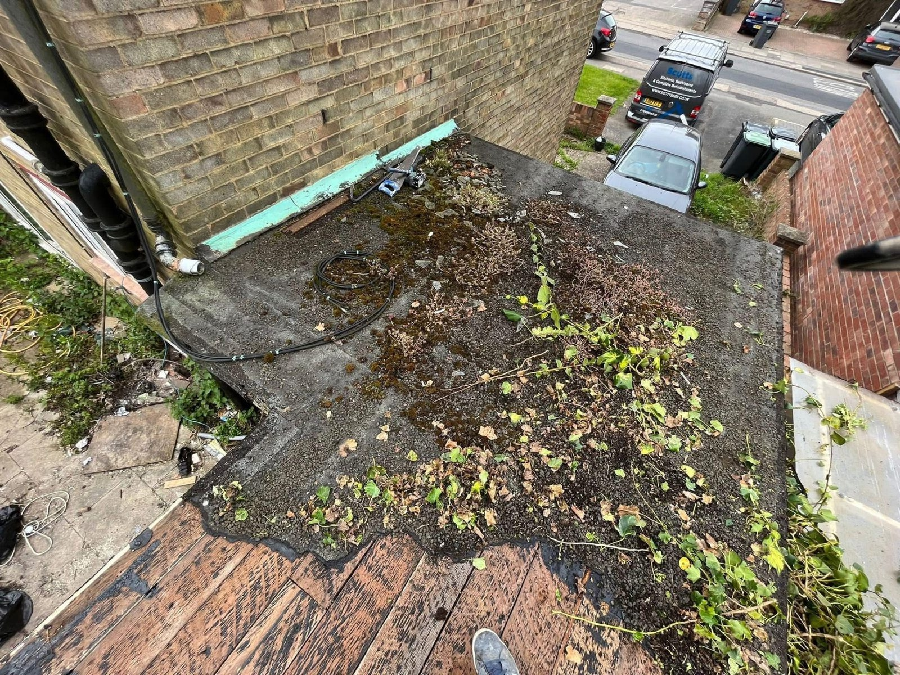
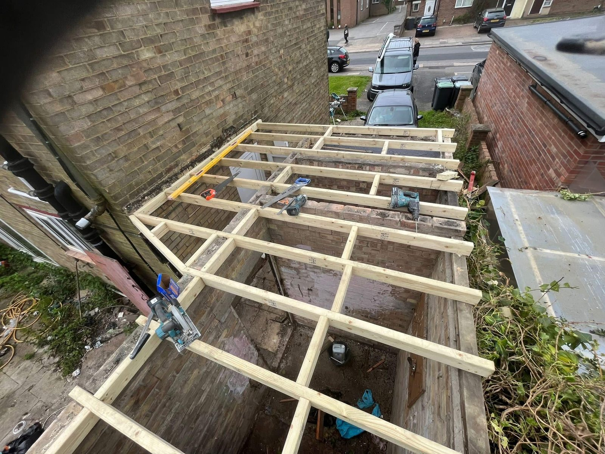
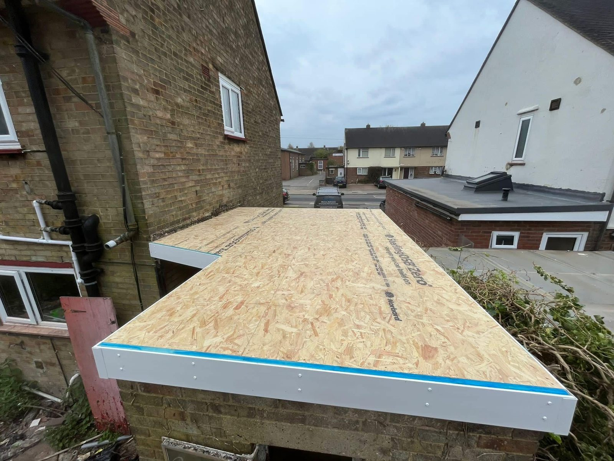
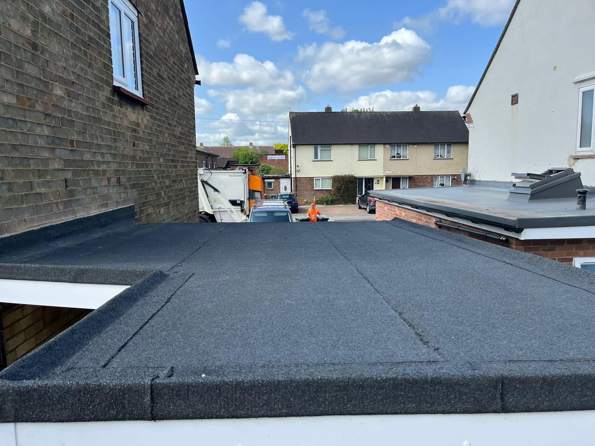

Insurance Reinstatement
Full reinstatement of a residential flat roof following water ingress. Structural timbers, decking and weatherproof covering replaced in full.
The brief
A failing flat roof, brought back to spec.
Following a leak, ARIA were instructed to fully renew the flat roof structure. The existing roof had reached the end of its serviceable life, with moss and plant growth, perished felt, and water ingress causing damage to the structural timber decking below.
Our team carried out a complete reinstatement: stripping back to brickwork, installing new structural joists, fitting OSB decking with proper edge detailing, and laying a new weatherproof felt covering.
The work




The result
Watertight, properly built, ready for years.
A complete reinstatement to a proper standard. New structural timbers, full OSB decking, fresh edge detailing and a new felt covering, engineered to perform rather than patched over.
Delivered through our JSPER-managed process: scoped, scheduled, evidenced and signed off with a full audit trail for the insurer.
Similar work?
Talk to us about your reinstatement claims, from emergency response through to full sign-off, with the JSPER-driven transparency your supply chain demands.
Get in touch